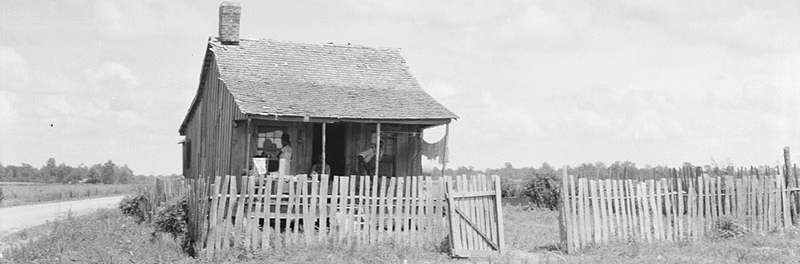

"Barn Burning" and "The Man Who Was Almost a Man:" Sharecropping and Coming of Age in Mississippi
Description:
This lesson explores how Faulkner and Richard Wright portray coming of age
Modality:
Online Synchronous
Preface
This lesson plan uses the coming of age theme as an entry point into William Faulkner’s “Barn Burning'' through which students can begin to explore the historical and cultural context of Yoknapatawpha County. In pairing “Barn Burning” with Richard Wright’s “The Man Who Was Almost a Man,” students will compare two stories of adolescent boys confronted with the socio-economic and racial barriers presented by Jim Crow era sharecropping. Both Sarty’s and Dave’s coming of age stories will be presented as opportunities to analyze how a economic institution like sharecropping can constrain individuals based on race and class.
Activities
Activity 1: Understanding the Coming of Age Genre
Respond: Discussion Questions
After you have completed reading the article, write short responses to the following questions:
- Based on the content of the article, why do you think coming of age is such a popular genre? What features of a coming of age story would appeal to young people?
- If you were to write a coming of age story about your own life, what would be the central moment in your life that it would focus on? For Sarty, it is the moment he disobeys his father and for Dave, it is the moment he shoots the mule. What would this moment be for you? What did this moment teach you on your path to adulthood?
Activity 2: Exploring The History of Sharecropping
“Sharecropping is a system where the landlord/planter allows a tenant to use the land in exchange for a share of the crop. This encouraged tenants to work to produce the biggest harvest that they could, and ensured they would remain tied to the land and unlikely to leave for other opportunities.”
Respond
Please write a response to the following questions:
- Based on the article and the videos, why do you think historians have criticized the practice of sharecropping? What aspects of sharecropping have been deemed unfair?
- Factor what you learned about sharecropping into your reading of “Barn Burning” and “The Man Who Was Almost a Man.” How might learning about the history of sharecropping help to explain some of the choices that Sarty and Dave made in their stories?
Activity 3: Visualizing Sharecropping Through Historical Photos
Walkthrough
- Go to Digital Yoknapatawpha’s page “Photographs of Faulkner’s World” and scroll down through the pictures.
- All of these photos come from the Library of Congress and depict the lives of Mississippi sharecroppers in the 1930s. This is what sharecroppers and their communities would have looked like when both Faulkner and Wright wrote their stories. Although Faulkner set his story in the 1890s, the system of sharecropping only changed slightly with the introduction of new technologies.
- Think about how these photos of real-life sharecroppers compare to how you imagined their lives to be like when you read the stories.
Respond
Please write a response to the following questions:
- Choose one photo that best represents what you think Sarty’s life was like in “Barn Burning.” This can be a photo that represents himself, his family, his community, his work, etc. Explain what part of Sarty’s life is similar to what you see in this photo and why.
- Choose another photo that best represents what you think Dave’s life was like in “The Man Who Was Almost a Man.” This can be a photo that represents himself, his family, his community, his work, etc. How does this representation of Dave’s life compare to the representation you chose for Sarty’s life? How are they both similar and different?
Activity 4: Analyzing Setting and Characterization
Explore and Respond (Part 1)
Please write a response to the following:
- Compare and contrast how "Sharecropper's Cabin" and "De Spain's Mansion" are described?
- How do the descriptions of these two dwellings clue us into the class differences between the Snopes family and the DeSpain family?
- Imagine you were creating an interactive map like this for “The Man Who Was Almost A Man.” If you were to describe the difference in socio-economic status between the Saunders family and the Hawkins family, which two quotes would you pick from the story and why? Are there any significant differences?
Explore and Respond (Part 2)
Walkthrough
- Go to Digital Yoknapatawpha’s map for “Barn Burning.”
- Click on “Show Characters” at the left of the map.
- Click on “Major & Secondary.”
- Locate the characters “Sarty Snopes” “Abner Snopes” “Lennie” and Major De Spain” by hovering over the map. You can also isolate individual characters by pulling up the Alphabetic List and ticking the checkbox for a character and clicking show.
- Click on the characters to read their character description and the scenes in which they are involved. (See "Response" section for questions on this topic)
Please write a response to the following:
- Take note of what you learned about the Snopes family and their employer, Major De Spain. Based on these descriptions and the events they participated in, what do we know about their identities and backgrounds? How does this information help to explain the motivations behind some of the ideas they express and actions they take?
- Then, compare these characters to their counterparts in “The Man Who Was Almost a Man”: Dave, Mr. and Mrs. Saunders, and Mr. Hawkins. In what ways are they similar and in what ways are they different? If you were to write your own character descriptions for “The Man Who Was Almost a Man” what details about their background and events they participated in would you include to help explain the motivations for the ideas they expressed and the actions they took?
Final Product: A Short Comparative Response Assignment
In an answer of at least 300 words, respond to the following prompt. Include at least one key quote from Faulkner and one key quote from Wright as evidence to support your argument.
- In studying the history of sharecropping, we learned that sharecropping as an economic institution in the South enforced a socio-economic class divide and exacerbated racial inequities during the era of Jim Crow segregation. For this response, compare how Faulkner and Wright depict the impact of sharecropping on class and racial division in their respective stories. How does the class divide and racial discrimination impact both young protagonists, Dave and Sarty, as they attempt to assert themselves as individuals? How might these institutional barriers shape how they try to find autonomy and react to the adversity that they both face? Focus on core similarities while also exploring how their different racial identities and ages give context to the different decisions they make as they come of age in the story. Consider the similar endings to the stories. Why do you think it is significant that they both flee their farms at the end of their stories?
Resources
For Teachers
About